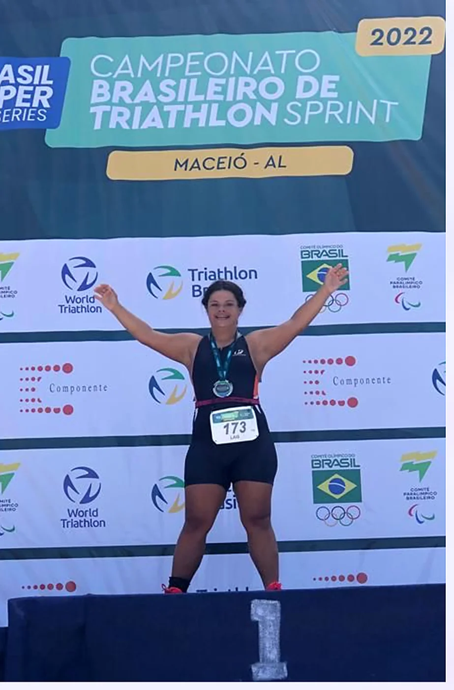
Primeira garota com Down do mundo no triathlon
Lais Oliveira começou no Meu Sorriso, quebrou barreiras e inspirou muita gente.
Emprestamos equipamentos adaptados e criamos esporte, lazer e cultura para pessoas com deficiência e suas famílias em Salvador.
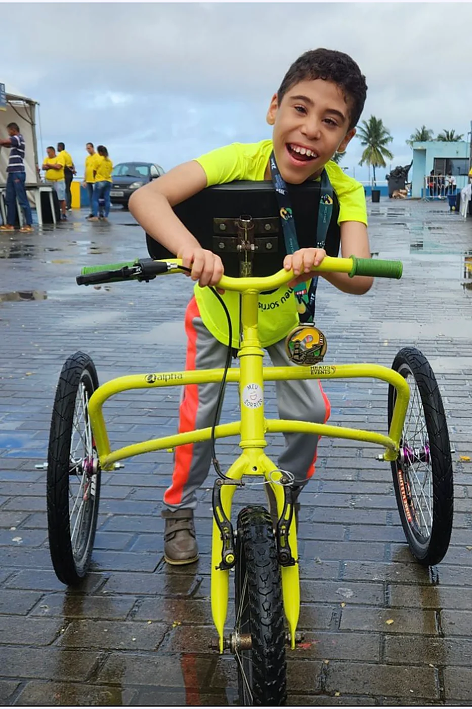

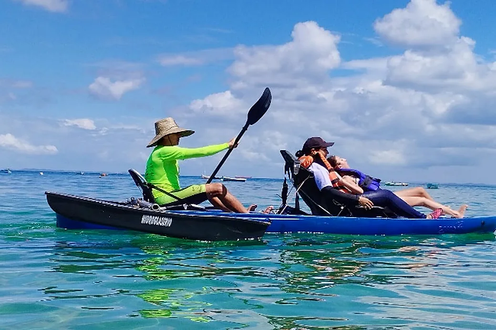
associados, entre pessoas com deficiência e famílias
pessoas com deficiência no Desafio Farol a Farol
atendidas hoje, de graça, na natação adaptada
nadadores na travessia do Desafio BTS, em 2023
alunos na Escola de Paraciclismo
vivências no projeto Viver a Cidade
Somos uma associação sem fins lucrativos que promove a qualidade de vida de pessoas com deficiência e suas famílias, estimulando a socialização pelo esporte , pelo lazer e pela cultura .
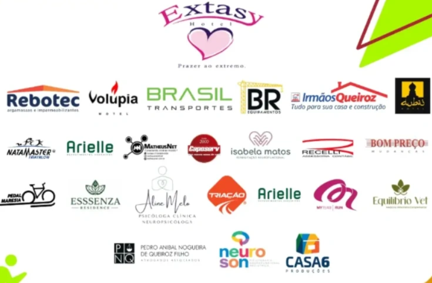
O Meu Sorriso surgiu em 2020, da reunião de amigos dispostos a melhorar a vida das famílias de pessoas com deficiência. A motivação veio da experiência do presidente, Frederico Matos, ao viver as dificuldades de participar de atividades sociais com a filha, Amanda.
Cinco anos nos Estados Unidos, dois deles ao lado da filha, deixaram o contraste claro. Em Salvador, a falta de dispositivos, de infraestrutura e de processos adaptados impede não só o acesso, mas a presença das pessoas com deficiência na vida cotidiana. E isso adoece a família inteira.
Marcas de uma associação que começou com um triciclo, em 2020.

Lais Oliveira começou no Meu Sorriso, quebrou barreiras e inspirou muita gente.
Três dos cinco atletas da Bahia começaram aqui. É a maior equipe de paratriathlon do estado.
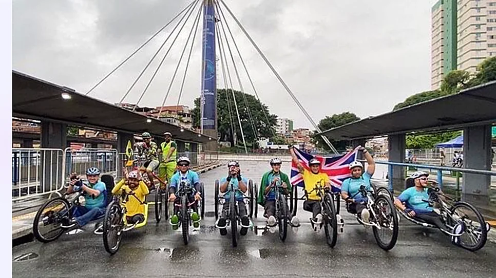
Planejada e realizada pela associação em 2022. Já são três edições.
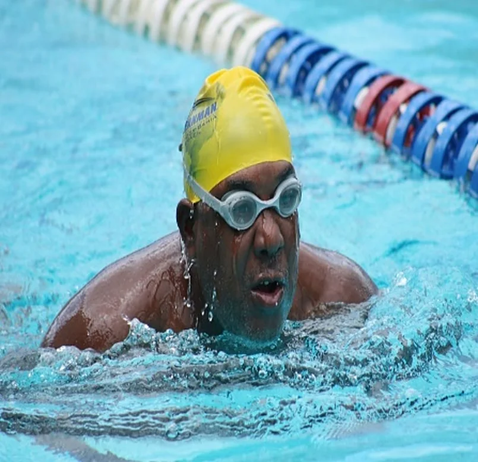
Único grupo que ensina a nadar quem nunca soube.
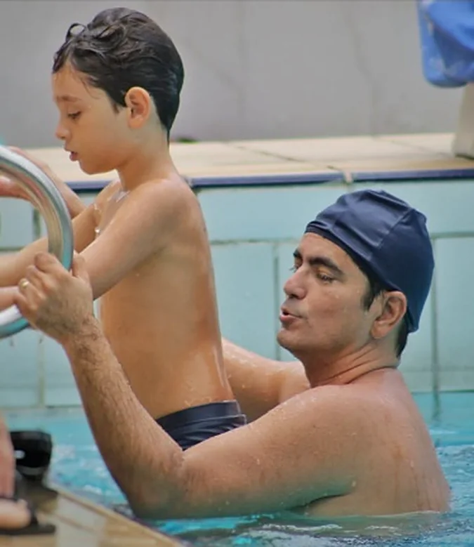
Único grupo com esse formato. Muitas crianças aprendem a nadar ali.
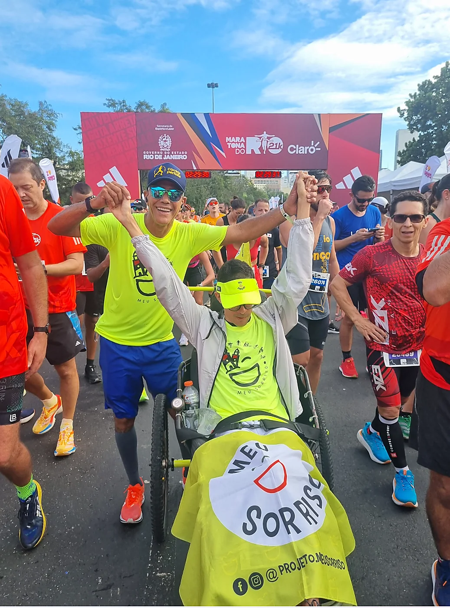
Uma família realizou o sonho: pai e filho, ambos com paralisia cerebral, correram juntos.
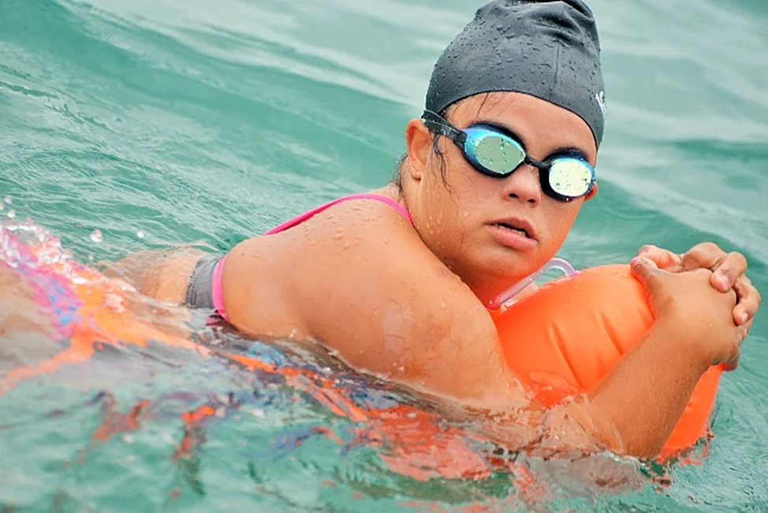
Uma garota com Down nadou toda a distância no Desafio BTS.
Quer fazer parte dessa história?
Fazer cadastroÉ incomum ver adolescentes e adultos com deficiência em convívio social. A sobrecarga de cuidados e as barreiras da cidade abrem caminho para o esgotamento do cuidador e a desestruturação da família.
Falta de infraestrutura e de processos adaptados que garantam a presença das pessoas com deficiência nos eventos da cidade.
O isolamento afeta a saúde física e mental de todo o núcleo familiar, e a sobrecarga de cuidados leva ao esgotamento de quem cuida.
O caminho é criar alternativas para a integração social das famílias de pessoas com deficiência. É aí que o Meu Sorriso atua.

Atuar como um projeto social amplo no desenvolvimento de soluções e no estímulo à socialização de pessoas com deficiência e suas famílias. Nossos valores: socialização, inclusão e bem-estar.
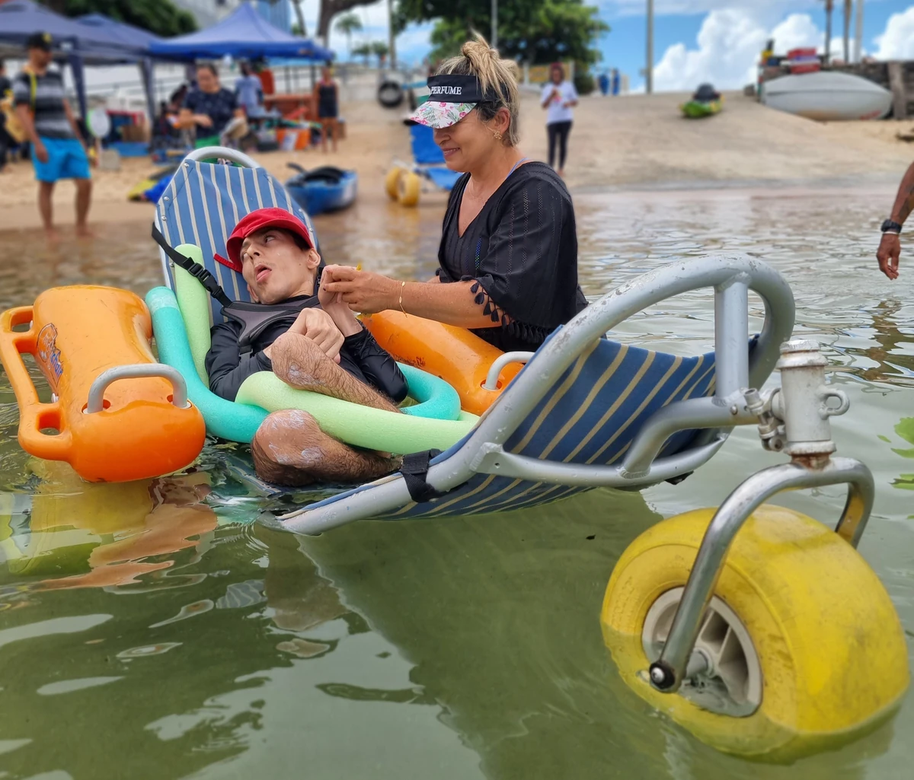
Desenvolvemos, adaptamos e adquirimos equipamentos que viabilizam a participação de pessoas com deficiência e de suas famílias em atividades de lazer, cultura e esporte.
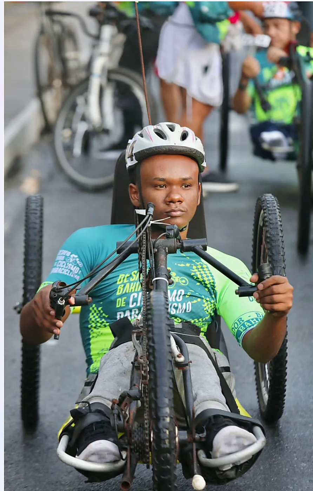
O esporte regular preserva a saúde física e mental e amplia a socialização. Nossos equipamentos adaptados viabilizam a prática por pessoas com deficiência, eventual, rogulares ou mesmo para competições.
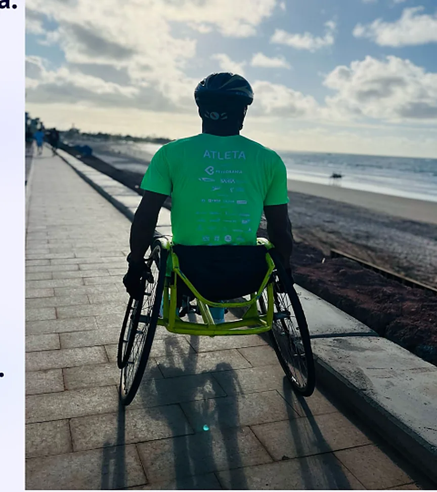
Acesso, conforto e segurança são as três barreiras a vencer para que a pessoa com deficiência viva a cultura da cidade de forma ativa: participando, não apenas assistindo.
Programas contínuos e desafios que já fazem parte da cultura esportiva de Salvador.
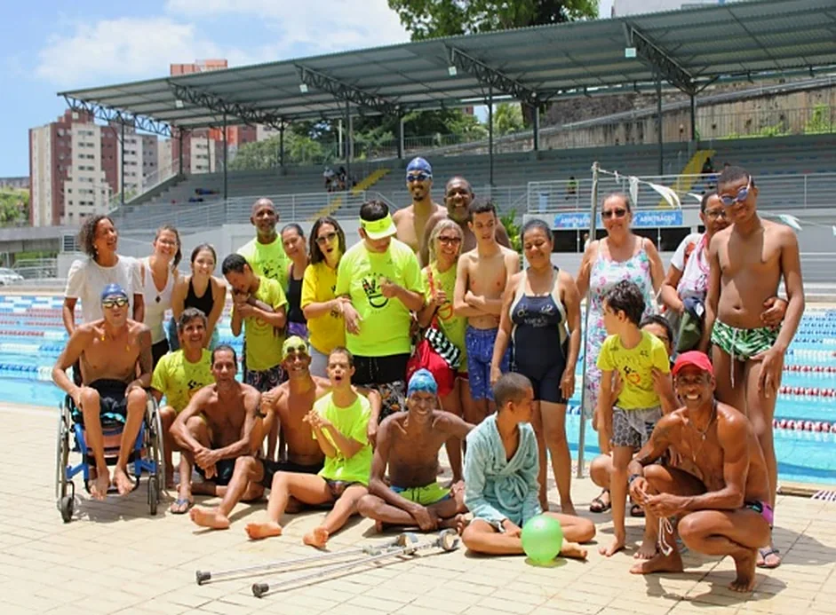
Aulas gratuitas para 30 pessoas: adultos com diferentes deficiências e crianças e adolescentes com autismo ou deficiência intelectual, que nadam junto com a família. Fila de espera com mais de 40 famílias.
Criada em 2025 para desenvolver as habilidades no uso dos equipamentos adaptados e formar uma nova geração de atletas.
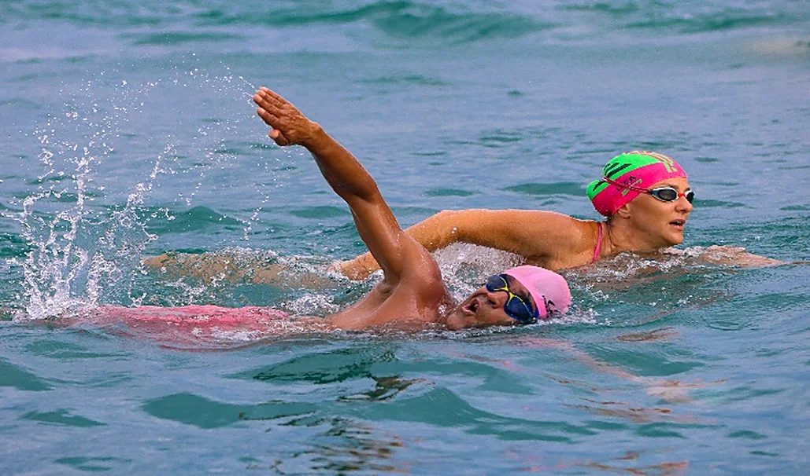
A travessia a nado de 13 km da Baía de Todos os Santos, talvez o maior desafio a nado para pessoas com deficiência do Brasil. Em 2023, 13 nadadores encararam a baía.
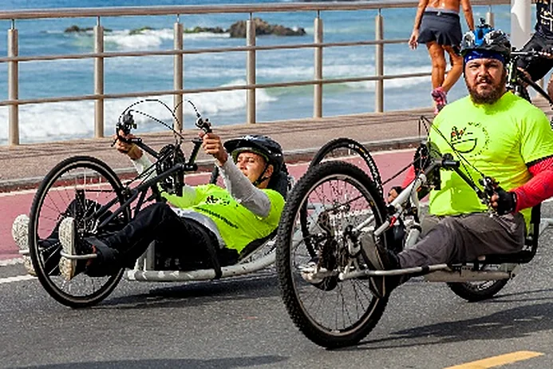
Os 22 km entre os dois principais faróis de Salvador, correndo, pedalando ou em triciclos assistidos. Duas edições já reuniram 54 pessoas com deficiência e provaram que a orla também é delas.
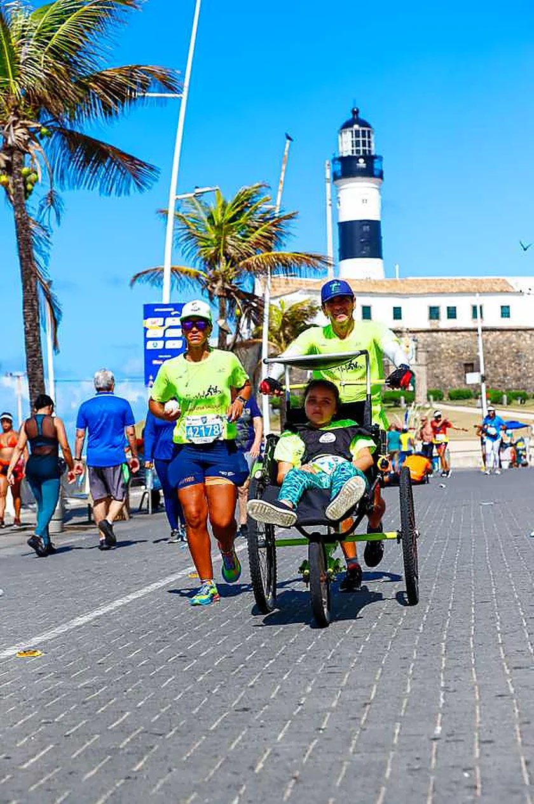
O Meu Sorriso está presente em diversas corridas de Salvador. Com os triciclos assistidos, muitas famílias vivem a experiência de estar ao ar livre junto aos amigos.
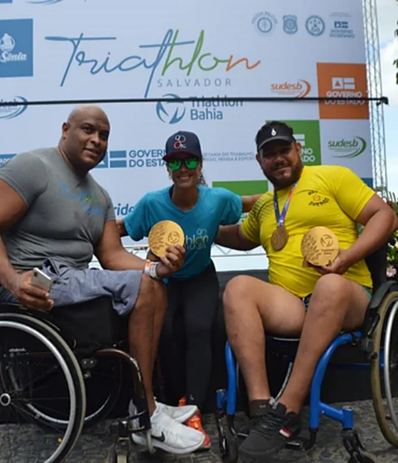
O triathlon está na origem do Meu Sorriso, desde o primeiro ano. Hoje é a maior equipe de paratriathlon do estado da Bahia.
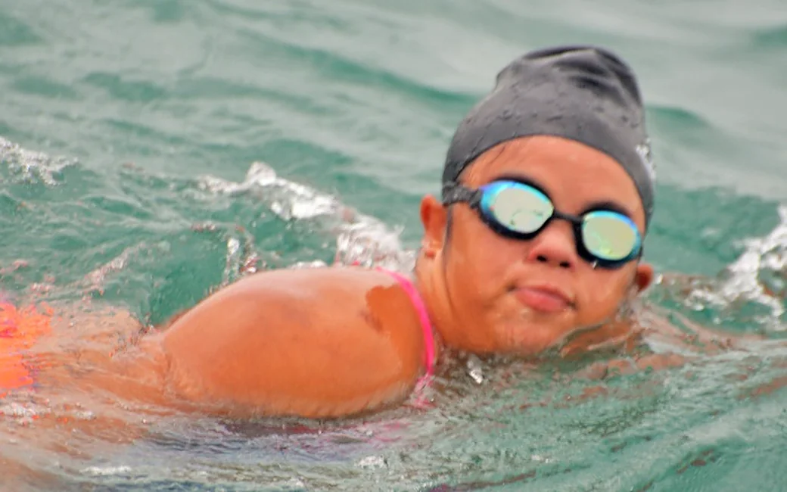
Desdobramento das aulas: um grupo de pessoas com deficiência disputa competições da Federação Baiana e do Circuito CPB.
Nos domingos em que a Prefeitura fecha a Av. Magalhães Neto, os equipamentos da associação ficam à disposição da comunidade de pessoas com deficiência.
Um triciclo ornamentado leva uma família ao Carnaval com conforto, segurança e acesso. A decoração destaca a presença da pessoa com deficiência e convida ao diálogo.
Os equipamentos são compartilhados e gratuitos, disponíveis por agendamento para que muitas famílias possam usá-los com autonomia. O uso gratuito vale para famílias e outras entidades.
Reservar equipamentoTire suas dúvidas sobre o funcionamento do acervo compartilhado, autonomia e formas de apoio.
Gratuitamente de forma compartilhada, por agendamento ou cessão temporária a famílias ou outras entidades. Os recursos não pertencem a um único indivíduo para garantir o máximo alcance social.
O foco principal é a autonomia familiar. Oferecemos as orientações de segurança iniciais necessárias para que as famílias possam usufruir dos equipamentos de forma independente e autônoma.
O suporte financeiro para conservação e logística das tecnologias assistivas é mantido por editais públicos, patrocínio institucional de empresas e doações diretas da comunidade.
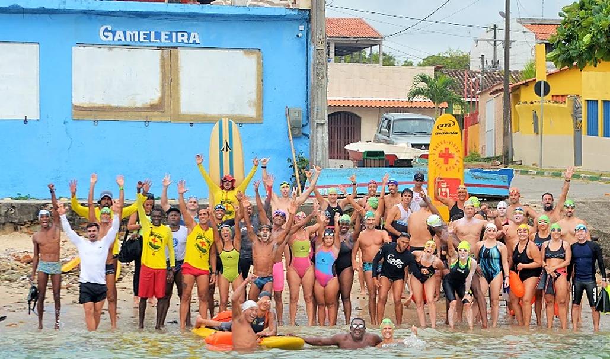
Famílias, pessoas com deficiência e apoiadores fazem o cadastro e passam a fazer parte da rede. Voluntários ajudam em treinos, eventos e na logística dos equipamentos.
Fazer cadastroConta corrente no PagBank, em nome da Associação Meu Sorriso.
Empresas podem destinar ICMS devido, com isenção de 80% do valor doado, pelo programa FAZATLETA da SETRE (Governo da Bahia), direcionando o recurso aos projetos da associação.
Escola de Paraciclismo, Escola de Natação Adaptada e Festival de Natação Special Olympics. Cada um pode ser apoiado individualmente.